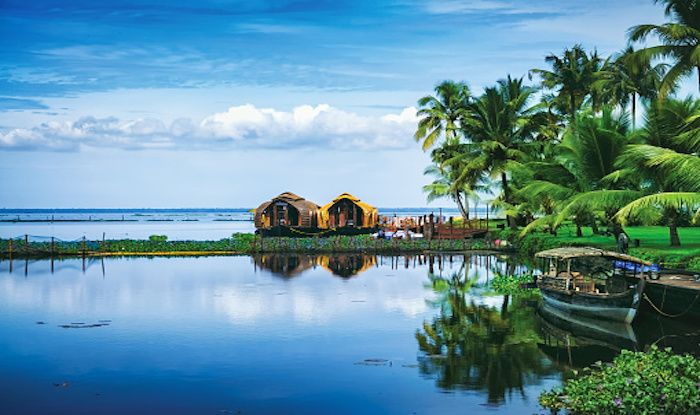

Alappuzha
Referred to as the Venice of the East, Alappuzha has always enjoyed an important place in the maritime history of Kerala. Today, it is famous for its boat races, backwater holidays, beaches, marine products and coir industry. Alappuzha Beach is a popular picnic spot. The pier, which extends out to the sea here, is over 137 years old. Entertainment facilities at the Vijaya Beach Park add to the attraction of the beach. There is also an old lighthouse nearby which greatly intrigues all visitors. Another delightful experience while in Alappuzha is the houseboat cruise. The houseboats you find in the backwaters of Alappuzha are in fact a reworked version of the Kettuvallams of olden times. Kettuvallam is a Malayalam word, ‘Kettu’, refers to dwelling structures and ‘Vallom’ means boat. In the olden days, kettuvallam or boat with thatched roof that covers over wooden hulls was used to carry tons of rice and spices. Of late, houseboats come equipped with all the comforts of a good hotel room including furnished bedrooms, modern toilets, cozy living rooms, a kitchen and even a balcony for angling. An uninterrupted view of life in the backwaters can be enjoyed while staying in a houseboat.
Top Destinations

Kuttanad
Kuttanad is a region covering a large part of Alappuzha and some of Kottayam district, the heart of the backwaters of Kerala. Kuttanad is the 'rice bowl of Kerala', being home to lush green rice fields spread extensively, divided by dykes. Travelling through this secluded alcove of nature will give you a feel of traditional countryside life of Kerala. A special peculiarity of this place is its geography. It lies around 2 metres below the main sea level, making it the lowest altitude place in the country. In these lowlands, Kerala produces large portions of the everyday meal on reclaimed lands, split up by many small and big rivers and creeks. These streams are perfect for the tourists to sail over and soak in the absolute best the region has to offer in an hour-long cruise on a houseboat or shorter trips on canoes. These trips offer scenes and sceneries that are worth remembering as well as capturing, thus making them ideal for the nature-lovers, shutterbugs as well as the odd romantic.
Ambalapuzha Sree Krishna Temple
Ambalapuzha Sree Krishna Temple is a Hindu temple dedicated to Lord Krishna situated in Alappuzha district. Built-in the traditional Kerala style architectural pattern, the temple is famous for its delicious rice pudding prepared in sweet milk, popularly known as Pal Payasam. Also called as the ‘Dwarka of the South’, the temple is believed to have been built between 15th - 17th AD by the local king Chembakkassery Pooradam Thirunal Devanarayanan Thampuran. The main deity presiding the temple called Parthasarathi (another name for Lord Krishna) is carved out of black granite stone and carries the sacred conch (shankh) in the left hand and a whip in the right.
Vembanad Lake
Vembanad Lake is a lagoon located in the district of Alleppey in the South-Indian state of Kerala. This expansive lake/ lagoon is longest lake in the country and the largest Lake in Kerala, accessible from Kottayam, Kuttanad and Kochi. Vembanad Lake is known by different names in different regions of Kerala. It is called the Kochi Lake in Kochi, the Punnamada Lake in Kuttanad and as Vembanad in Kottayam. Locals also call it Vembanad Kol or Vembanad Kayal.